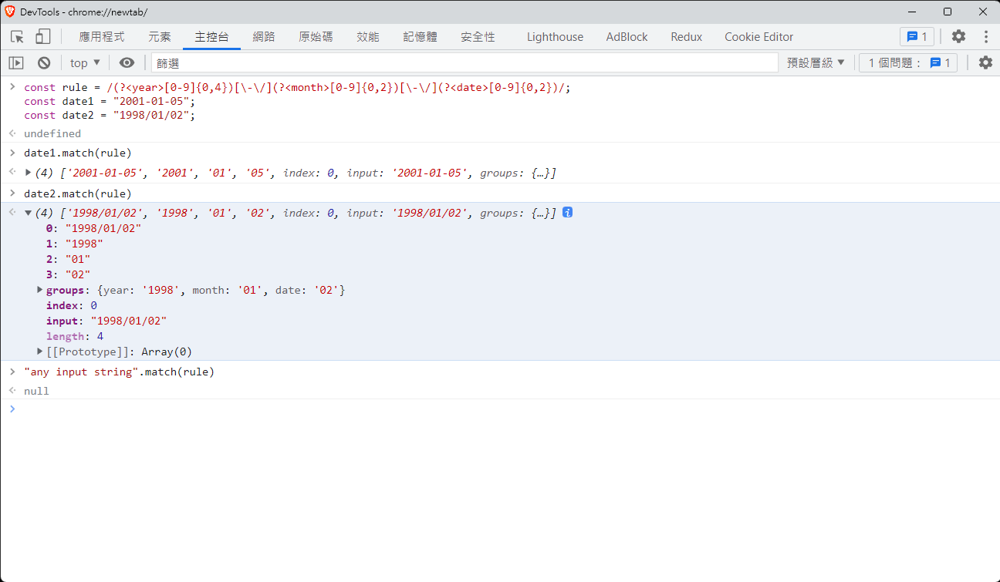

常用技巧與函數
這個部分，統整了一些常用的 JavaScript 函式及語法
解構賦值
解構賦值的概念是，如果被引用的值屬於物件或是陣列，可以用同樣結構的宣告，把值取出來：
const point = {
x: 10,
y: 20,
z: 30
}
const { x, y, z } = point;
// x = 10 , y = 20 , z = 30
也可以使用別名的方式，比方說
const point = {
x: 10,
y: 20,
z: 30
}
const { x: a, y: b, z: c } = point;
// a = 10 , b = 20 , c = 30
// 稍微排序一下
// 對照 point 的宣告，a b c 剛好在 x y z 的值上
// 因此會宣告a, b, c 三個變數分別對應到x, y ,z
const {
x: a,
y: b,
z: c
} = point;
陣列也可以：
const arr = [1,2,3,4,5,6,7,8];
const [first] = arr;
// first = 1
// 可以解構更多的值：
const [a,b,c,d,e,f,g,h] = arr;
// a = 1, b = 2, c = 3, d = 4, e = 5, f = 6, g = 7, h = 8
引數也可以解構：
const point = {
x: 10,
y: 20,
z: 30
}
function getPoint({x, y, z}) {
console.log(x, y, z);
}
getPoint(point) // print 10 20 30
getPoint({x: 100, y: 200}) // print 100 200 undefined
即使物件多麼複雜，只要有辦法宣告成同樣的形式，都可以解構
const complexObj = {
a: {
b: {
c: {
d: 100
}
}
}
};
const { a: { b: { c: { d }}}} = complexObj
console.log(d) // print 100
// alias
const complexObj = {
a: {
b: {
c: {
d: 400
}
}
}
};
const { a: { b: { c: { d: myVar }}}} = complexObj
console.log(myVar) // print 400
展開運算子
可以使用 ... 運算子，對物件或是迭代器進行展開：
陣列展開
let arr = [10, 20, 30, 40, 50];
let [first, ...data] = arr;
// first = 10
// data 則是把剩下的展開， data = [20, 30, 40, 50]
let [first, ...data, last] = arr //Error，展開運算子必須得要放在最後
物件展開
const point = {
x: 10, y: 20, z: 30
}
const { x, ...other } = point
// x = 10
// other = { y: 20, z : 30 }
也可以在引數展開
function sum(a, b, c) {
return a + b + c;
}
const arr = [1, 2, 3];
sum(...arr); //會展開成 sum(1, 2, 3)
反過來，也可以在參數展開
function sum(...numbers) {
let res = 0;
for(let i = 0; i < numbers.length; ++i)
res += numbers[i];
return res;
}
sum(1,2,3,4,5,6); // return 21
進階用法
可以用來拷貝一層 array (請注意，該方法不是深拷貝，僅是拷貝一層陣列而已)
let arr = [1,2,3,4,5,6,7,8];
let arr2 = arr;
let arr3 = [...arr]; // 展開 arr
console.log(arr === arr2); // true
console.log(arr2 === arr3); // false
也可以用來合併物件or陣列：
let obj1 = {
x: 10,
y: 20
}
let obj2 = {
a: true,
b: false
}
let obj3 = { ...obj1, ...obj2 };
console.log(obj3)
/* {
x: 10,
y: 20,
a: true,
b: false
} */
let arr = [1,2,3];
let arr2 = [2,3,4];
let arr3 = [...arr, ...arr2] // [1,2,3,2,3,4]
let arr4 = [...arr,...arr,...arr2,...arr]// [1,2,3,1,2,3,2,3,4,1,2,3]
/* 初始化物件的技巧 */
const defaultValue = {
x: 100,
y: 200,
z: 300,
}
const obj = {
...defaultValue,
z: 400
}
// obj = { x: 100, y: 200, z: 400 }
/* 要注意展開的順序 */
const obj = {
z: 400,
...defaultValue,
}
// obj = { x: 100, y: 200, z: 300 }
// 因為 defaultValue 後展開，所以把原本的值又蓋掉了
物件迭代器
在 Object.prototype 中，提供了幾種實用的方法
const obj = {
x: 10,
y: 20,
a: true,
b: false
};
let objKeyIter = Object.keys(obj); //回傳迭代器
for(const key of objKeyIter) {
console.log(key) // 依序印出 x, y, a, b
}
for(const value of Object.values(obj)) {
console.log(value) // 依序印出 10, 20, true, false
}
for(const pair of Object.entries(obj)) {
console.log(pair[0], pair[1])
// 依序印出:
// x 10
// y 20
// a true
// b false
}
/* 當然，上面的用法可以合併解構附值 */
for(const [key, value] of Object.entries(obj)) {
console.log(key, value) // 結果同上
}
/* 前面有提到，迭代器可以被展開 */
let keys = [...Object.keys(obj)] // ['x', 'y', 'a', 'b']
let value = [...Object.values(obj)] // [10, 20, true, false]
let entries = [...Object.entries(obj)]
/*
[
['x', 10]
['y', 20]
['a', true]
['b', false]
]
*/
/* 使用 fromEntries 還原物件 */
const o = Object.fromEntries(entries) // o = obj
此外，諸如string 等也有實現迭代器，因此
console.log(...'hello,world') //輸出 h e l l o , w o r l d 共11個字元
短路求值以及 ?? 運算子
在 JavaScript 中， boolean 判斷主要分為 falsy 和 truthy
falsy 的意義是，在判斷式中會被當成 false 的值，truthy 則反之
只需要記得 falsy 就好，falsy的值有：
- false
- 0
- -0
- 0n (bigint)
- "", '', `` (空字串)
- null
- undefined
- NaN
- document.all
其餘的都是 Truthy 值
而看到的 || 和 && 運算子，其真正的定義如下：
let res = A || B //若 A 為false，才執行 B 敘述
/* Example */
let res1 = 100 || 'string' || console.log(100) // 100 是 truthy，後面不必判斷了，短路求值
let res2 = 0 || 'string' || console.log(100) // 0 是 falsy, 'string' 是 truthy，短路求值
let res3 = A() || B() || C() // 若 A() 回傳 truthy 值，則B、C 不執行
/* 以下與 res3 等價 */
if(!A()) {
if(!B()) {
C()
}
}
let res = A && B //若 A 為truthy，才執行 B 敘述
/* Example */
let res1 = false && 0 && console.log(100) // false 是 falsy，短路求值
let res2 = true && 0 && console.log(100) // true 是 truthy，0 是 falsy，短路求值
let res3 = true && 100 && console.log(100) // 前面兩個都是 truthy，執行 console.log
let res4 = A() && B() && C();
/* 以下與 res4 等價 */
if(A()) {
if(B()) {
C();
}
}
?? 空值合併運算符比較特殊，他會排除nullish(null 或是 undefined)來判斷求值
let value1 = 0 || 100; // value = 100
let value2 = 0 ?? 100; // value = 0, 因為 0 不是 nullish
let value3 = null ?? 100; // value = 100
let value4 = undefined ?? 100; // value = 100
let value5 = '' || 'default string' // value = 'default string'
let value6 = '' ?? 'default string' // value = '', 因為 '' 不為 nullish
?. 可選鏈式運算子
假設有個函式：
async function findOrEmpty() {
const res = await fetch(urlWithId) // 回傳的結果有可能為 null, 找不到 Id
// 1. { id, userData: ... }
// 2. 沒找到, null
// userData 的格式可能為 { name: string, age: number } 或是忘記填為 null
// 需要回傳 user 的名字
return res.userData.name;
}
上面的函式有個重大錯誤，那就是 res 有可能是 null，那執行 res.userData 相當於存取 null 的 userData 屬性
res.userData 也有可能是 null，導致相當於存取 null 的 name 屬性
這會導致 Error 被擲出，因此需要進行檢查，比方說：
async function findOrEmpty() {
const res = await fetch(urlWithId)
let name = 'DEFAULT';
if ( res ) {
if ( res.userData ) {
name = res.userData.name
}
}
return name;
}
學會了短路求值，可以使用：
async function findOrEmpty() {
const res = await fetch(urlWithId)
let name = 'DEFAULT';
if( res && res.userData )
name = res.userData.name;
return name;
}
而 ?. 運算子則允許存取一個可能為nullish的數值，並當遇上nullish時，回傳undefined 並且中止求值
async function findOrEmpty() {
const res = await fetch(urlWithId)
// 如果 res = null，直接回傳 undefine
// 並中止對 res.userData、res.userData.name 求值
return res?.userData.name;
}
已經知道遇上 nullish 會回傳 undefined，上面使用預設值的寫法可以改成：
async function findOrEmpty() {
const res = await fetch(urlWithId)
return res?.userData.name ?? 'DEFAULT'; // 使用空值合併運算子，給予初始值
}
參考 ?? operator 和 Optional chaining
陣列
在 JavaScript 中，陣列的方法算是極度常用的，這裡只說明幾個常用的 Function：
先假定原始資料：
const users = [
{
name: 'Peter',
age: 20,
salary: 3800
},
{
name: 'Mary',
age: 22,
salary: 4000
},
{
name: 'Jason',
age: 30,
salary: 8900
},
{
name: 'Benson',
age: 45,
salary: 7000
},
{
name: 'Neil',
age: 35,
salary: 5200
},
]
陣列大部分的參數，都是接受一個簽章為：
function callback(element, index, arr) {
console.log(element, index, arr);
}
的方法，三個參數分別是
- 當前元素
- 當前元素索引
- 原始陣列
map() 轉換原始陣列變成另外一個陣列
let data = users.map( e => {
return e.salary
});
console.log(data) // [3800,4000,8900,7000,5200]
Note! 有個很接近的方法叫做 forEach，但是不建議使用，他算是 for-loop 的callback版本
for(let i = 0; i users.length; ++i) {
console.log(`index = ${i}, value = ${users[i]}`);
}
//等同
users.forEach((e,i) => {
console.log(`index = ${i}, value = ${e}`);
})
let data = users.forEach((e,i) => {
return e.salary
})
console.log(data) // undefined, forEach不回傳陣列
因為 forEach 可以被 map 取代，且 forEach 不回傳陣列，因此會有人用來修改原始陣列，比方說
users.forEach((e,i, arr) => {
arr[i] = e.salary;
})
這不是一個好做法，因此不推薦使用 forEach
此外，早期還未出現展開運算子之前，可以用 map 複製陣列
// const data = [...arr]
const data = arr.map(e => e);
filter() 過濾原始陣列
let data= users.filter((e) => {
return e.age > 30; // 必須回傳 boolean 值
})
console.log(data) /* data = [
{
name: 'Benson',
age: 45,
salary: 7000
},
{
name: 'Neil',
age: 35,
salary: 5200
}
] */
every() 以及 some() 判斷所有陣列
const flag1 = users.every(e => e.salary > 5000) // false, 因為有人薪水不足 5000
const flag2 = users.some(e => e.salary > 5000) // false, 因為有人超過 5000
every 的概念相當於C++的 all_of(全部符合), some 則是 any_of(任一符合)
sort 進行排序
users.sort((a,b) => a.age - b.age) // 根據 age 排序
users.sort((a,b) => a.name.localeCompare(b.name)) // 根據 name 排序
// string 要使用 string.localeCompare 進行比較
slice 進行分割
// users.slice(startIndex, count)
users.slice(0, 2) // 從index 0 開始，取出兩個元素
find 傳入條件式，尋找元素
// 因為 find 不一定會找到，建議使用 ?. 來存取物件
const name = users.find(e => e.age === 22)?.name
在實例上，會建議通過一系列的轉換，取出所需要的資料，比方說：
const users = [
{
name: 'Peter',
age: 20,
salary: 3800
},
{
name: 'Mary',
age: 22,
salary: 4000
},
{
name: 'Jason',
age: 30,
salary: 8900
},
{
name: 'Benson',
age: 45,
salary: 7000
},
{
name: 'Neil',
age: 35,
salary: 5200
},
{
name: 'Howard',
age: 44,
salary: 6666
},
{
name: 'Alex',
age: 35,
salary: 7777
},
]
const salarySigma = users
.filter(e => e.salary > 5000)
.map( e => e.salary )
.reduce((sum, currentValue) => sum + currentValue, 0);
console.log(salarySigma) // 35543
const salaryAvg = salarySigma / users.filter(e => e.salary > 5000).length // 7108.6
通過一系列的轉換函式，取出所需要的資料
絕大部分的 Web 應用，都是處理資料的轉換，因此字串、陣列相關的方法，幾乎是必備的知識
反過來說，雖然也有情況要進行CPU的密集計算，但是該情況還是相對比較少的
前面提到的用法，幾乎涵蓋大部分陣列的使用情境，但也建議稍微看一下 String.prototype 跟 RegExp.prototype 的資料
其中 RegExp 是 Regular Expression 正規表示法的意思，允許使用模式來匹配字串，舉例來說：
// 假定輸入的資料是日期格式，且有可能是 YYYY-MM-DD 或是 YYYY/MM/DD
const date1 = "2001-01-05";
const date2 = "1998/01/02";
const rule = /(?<year>[0-9]{0,4})[\-\/](?<month>[0-9]{0,2})[\-\/](?<date>[0-9]{0,2})/;

這只是一個很小的範例，還有很多種用法，比如說：驗證電子信箱、網址格式、特定的文字輸入...等，且上方的RegExp 是有小瑕疵的(你可以嘗試找出來！)
總之，字串與陣列的處理，涵蓋大部分的操作情境，且額外要注意的事情是：一些 ArrayLike 物件，若有實現迭代器，也是可以輕鬆轉換成陣列的

querySelectorAll 回傳的結果是 NodeList，他並沒有陣列的成員或是屬性，也無法通過 Array.isArray 的測試；
但是經過迭代器展開，或是早期的轉換方式 Array.prototype.slice.call 後，就成為了陣列型別
這些"像是"陣列樣子的物件，被稱作 ArrayLike，除了陣列本身是ArrayLike(因為陣列算是一種特殊的物件，JavaScript沒有真正意義的原生陣列)，還有String也是很經典的例子
JSON的序列化/反序列化
/* 反序列化 */
const strLikeJson = '{ "a":100, "b": 200, "c" : 3000 }';
const object = JSON.parse(strLikeJson);
/**
* object {
* a: 100,
* b: 200,
* c: 30000
* }
*/
/* 序列化 */
const str = JSON.stringify({ a: 10, b: 20, c: 30 });
// string '{"a":10,"b":20,"c":30}'
JSON.parse 用來把 JSON 字串轉換為 JS物件，且一定要是 JSON字串，這個說法有一點模糊，看下面的例子
const str1 = "{ a: 10, b: 20 }";
const str2 = "{ a: 10, b: 20, }";
const str3 = "{ 'a': 10, 'b': 20 }";
const str4 = "{ \"a\": 10, \"b\": 20 }";
在上述的例子中，只有 str4 是合法的 JSON字串
JSON.parse 可以接受第二個參數 reviver function，在 parse 解析完字串後，可以進行一些修改：
const jsonStr = '{ "a":100, "b": 200, "c": 300 }';
let a = JSON.parse(jsonStr, (key, value) => {
console.log(key, value);
if(typeof value === "number")
return value + 50;
return value; // return origin value
});
// a = { a: 150, b: 250, c: 350 };
這允許在解析的同時進行一些修改或檢驗，但是要注意，最後一個解析會收到 key 為空字串結果，雖然沒有特別註記，但筆者猜測應該是告知開發者，Parse 結束的情況
如果 reviver 中沒有回傳值為 undefined，則會刪除該屬性：
const jsonStr = '{ "a":100, "b": 200, "c": 300 }';
let a = JSON.parse(jsonStr, (key, value) => {
switch( key ) {
case "a":
case "b":
break;
default:
return value;
}
});
// a = { c: 300 };
如果當次解析的物件是巢狀的，則由深到淺解析
JSON.parse('{"a":{"b":{"c":{"d":true}}}}', (k,v) => { console.log(k); return v});
// output: d c b a
JSON.stringify 則是會把物件轉換成對應的 JSON字串，優先調用 toJSON 方法，然後把 可列舉 跟 可序列化 的屬性進行轉換
- 可列舉：PropertyDescriptor 中 enumerable 為 true 的屬性
- 可序列化：例如 function，就不可進行轉換，通常僅轉換：
string,boolean,number；如果屬性是陣列或物件，則深入檢查
JSON.stringify 可以額外接受兩個參數，第二個參數是 replacer，可以是function 或是 array：
const foo = {
foundation: "Mozilla",
model: "box",
week: 45,
transport: "car",
month: 7
};
const jsonStr = JSON.stringify(foo, (key, value) => {
/* replacer 為 Function 時，如果 return 的值是 undefined, 則忽略該值 */
if (typeof value === "string") {
return undefined;
}
return value;
});
// jsonStr = '{"week":45,"month":7}'
/* replacer 為 array 時，僅保留對應的key */
const jsonStr2 = JSON.stringify(foo, ['model', 'month', '??']);
// jsonStr = '{"model":"box","month":7}'
第三個參數是 space 只是控制縮排而已，例如在輸出文件時，可以使用 JSON.stringify(obj, null, 4) 保留 4個space 的縮排
匿名函數
當調用 Lib 的 function，且內部調用極深時，可以再某個地方使用 function(){} 而不是 () => {}
這裡使用 setTimeout() 來說明：
setTimeout(function myFn(){
throw new Error();
}, 0)
/* Error stack:
Uncaught Error
at myFn (<anonymous>:2:9)
*/
setTimeout(() => {
throw new Error();
}, 0)
/* Error stack:
Uncaught Error
at (<anonymous>:2:9)
*/
若自己開發Library，或是使用了較深的function invoke，可以加上 function name(){} 來進行除錯，比方說：
lib(function myFn(){
/* do something */
})
/* Error stack:
Uncaught Error
at (<anonymous>:2:9)
at (<anonymous>:2:9)
at myFn (<anonymous>:2:9) <---- 也許某個部分會原本的函式名稱
at (<anonymous>:2:9)
at (<anonymous>:2:9)
at (<anonymous>:2:9)
at (<anonymous>:2:9)
at (<anonymous>:2:9)
*/
// 反之，若使用 arrow function：
lib(() => {
/* do something */
})
/* Error stack:
Uncaught Error
at (<anonymous>:2:9)
at (<anonymous>:2:9)
at (<anonymous>:2:9)
at (<anonymous>:2:9)
at (<anonymous>:2:9)
at (<anonymous>:2:9)
at (<anonymous>:2:9)
at (<anonymous>:2:9)
會完全遺失錯誤堆疊的資訊
*/